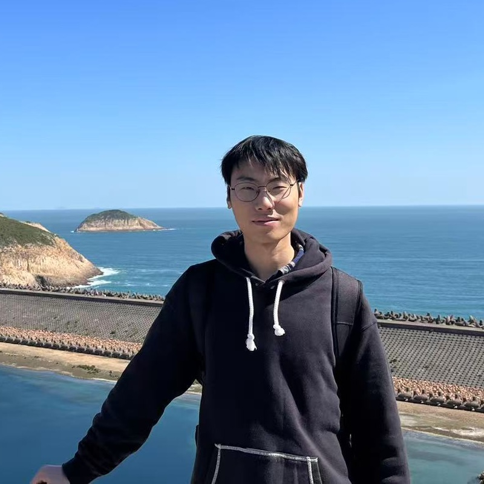

Feng Wu
Rm 205, Run Run Shaw Building |
 |


💡 Biography
I am currently a Phd student in the School of Computing and Data Science, The University of Hong Kong, supervised by Prof. Lequan Yu. My research lies at the intersection of artificial intelligence and statistics. Specifically, my research focuses on Bayesian deep learning, multimodal learning, electronic health records (EHRs) and medical imaging analysis.
I worked as a software engineer at Alibaba Group during 2022-2023. I obtained my B.Eng degree in Mechanical Engineering from Zhejiang University in 2019, and my M.Eng degree in Mechanical Engineering from Zhejiang University in 2022.
🔥 News
- [01/2026] One paper was accepted by ICLR 2026.
- [11/2025] One paper was accepted by Nature Communications.
- [09/2025] One paper was accepted by NeurIPS 2025.
- [05/2025] One paper was accepted by ACL 2025.
- [05/2025] One paper was accepted by ICML 2025.
📎 Experience
-
The Alibaba GroupJul. 2022 – Jul. 2023
Software Engineer
Topic: Logistics and transportation timeliness in Digital Chain
-
The Chinese University of Hong Kong (Shenzhen)Jul. 2018 – Jun. 2019
Research Intern
Topic: Emotionally interactive robot design for the treatment of autism
📖 Selected Publications [Google Scholar]
-
* indicates equal contribution; † indicates corresponding authorship.
2026
-
Horseshoe Splatting: Handling Structural Sparsity for Uncertainty-Aware Gaussian-Splatting Radiance Field Rendering
Feng Wu*, Tsai Hor Chan*, Yihang Chen, Lingting Zhu, Guosheng Yin, Lequan Yu†.
The Fourteenth International Conference on Learning Representations (ICLR), 2026.
2025
-
Knowledge-guided adaptation of pathology foundation models effectively improves cross-domain generalization and demographic fairness
Yanyan Huang, Weiqin Zhao, Zhengyu Zhang, Yihang Chen, Yu Fu, Feng Wu, Yuming Jiang, Li Liang, Shujun Wang, Lequan Yu†.
Nature Communications, 2025. -
Amplifying Prominent Representations in Multimodal Learning via Variational Dirichlet Process
Tsai Hor Chan*, Feng Wu*, Yihang Chen, Guosheng Yin, Lequan Yu†.
The Thirty-ninth Annual Conference on Neural Information Processing Systems (NeurIPS), 2025. -
Ctpd: Cross-modal temporal pattern discovery for enhanced multimodal electronic health records analysis
Fuying Wang*, Feng Wu*, Yihan Tang, Lequan Yu†.
Findings of the Association for Computational Linguistics (ACL), 2025. -
Cross-Modal Alignment via Variational Copula Modelling
Feng Wu*, Tsai Hor Chan*, Fuying Wang, Guosheng Yin, Lequan Yu†.
Forty-second International Conference on Machine Learning (ICML), 2025.
Before 2025
-
Head design and optimization of an emotionally interactive robot for the treatment of autism
Feng Wu*, Shengzhao Lin*, Xiangfei Cao, Huixin Zhong, Jiaming Zhang†.
Proceedings of the 2019 4th International Conference on Automation, Control and Robotics Engineering (CACRE), 2019.
🏆 Honors & Awards
-
NeurIPS 2025 Scholar Award -
Postgraduate Scholarship Award, University of Hong Kong, 2023-2027 -
Award of Honor for Graduate, Zhejiang University, 2020 -
Outstanding Graduate of Zhejiang University, 2019 -
"Silver Award" of National Graduation Design Competition (Top 8), Chinese Mechanical Engineering Society, 2019 -
Elite Liu Yongling Scholarship, Zhejiang University, 2019 -
First-class Scholarship for Outstanding Students, Zhejiang University, 2017 -
Third-class Scholarship for Outstanding Students, Zhejiang University, 2016, 2018
📏 Professional Activities
International Conference on Machine Learning (ICML 26)
International Conference on Learning Representations (ICLR 2026)
📚 Teaching
| 2023-2026 | STAT3600 Linear Statistical Analysis |